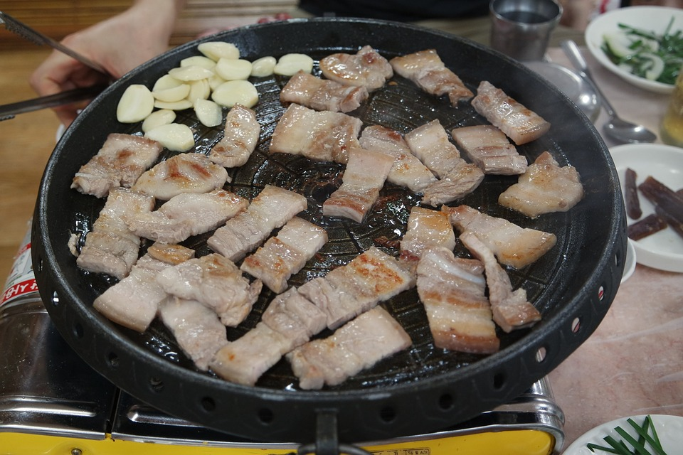
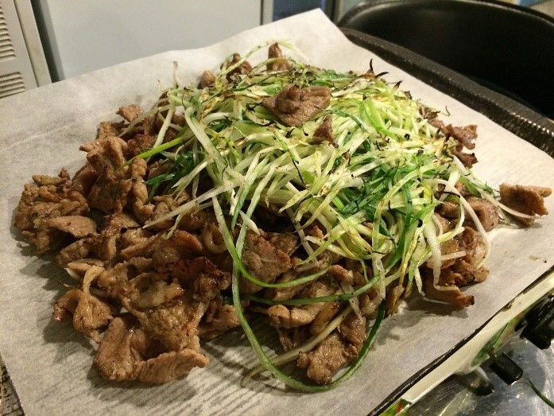
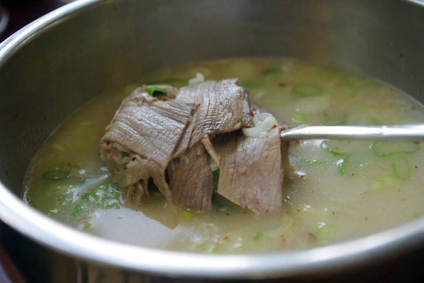
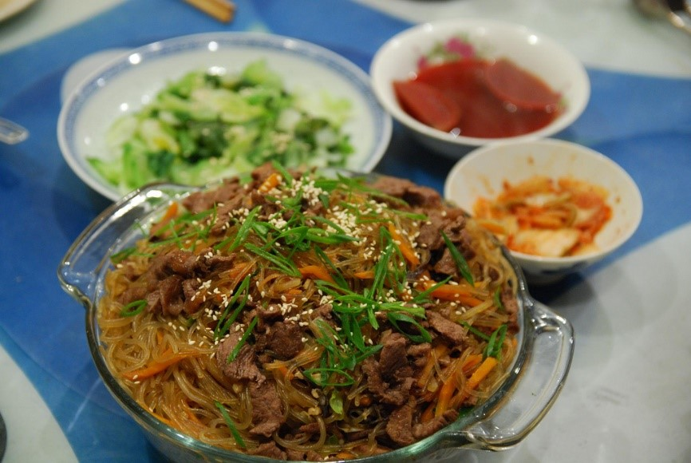

In case you didn’t like our choice of restaurants, we got an alternative recommendation you might enjoy. As Koreans, we would like to recommend Korean food that are accessible at any Korean restaurant in the U.S.
These are the choices of food that cannot go wrong for anyone:

Korean Barbecue
With your choice of meat, you roast them with diner’s table on gas or charcoal grills that are built in the table itself. Some restaurants that do not have any built-grills have portable stoves for their customers. The fact that you can cook anything you want in your own way will make your experience satisfying. We personally prefer Samgyeopsal (pork belly).
How to Eat Korean Barbecue

Bulgogi
Bulgogi is a stir-fried beef marinated by Bulgogi sauce. The beef is first sliced then marinated with the sauce and other various vegetables (mainly onions). Then, the Bulgogi is put to sleep so it can age for a day to absorb more flavor from the sauce. When the margination is finally complete, the Bulgogi will be cooked on a grill or a fry pan. The sweet and flavorful beef is often served with other side dishes and rice. Amazing food.

Seolloengtang
Seolleongtang is an ox-bone soup with its signature milky white color broth. The soup will contain some strips of meat, finely chopped scallions, noodles, and broth from boiling ox bone tail in water for about a day. This amazing milky soup is served with rice and other side dishes. If you have a mild taste, this soup can never go wrong.

Japchae
Japchae is a Korean stir-fried glass noodle. It is stir fried with sesame seed oil with vegetables, sometimes served with beef, and flavored with soy sauce. Glass noodle’s chewiness makes the taste more flavorful and the fact that it has many vegetable in it makes it very healthy for your body.